Hidden House
A single-storey, two-bedroom new build on a 72-square-metre footprint, built in reclaimed brick over the listed vaults of the old Clerkenwell House of Detention.
A house built over a vault.
The site is the footprint of a former caretaker's shed in Clerkenwell Green Conservation Area, next door to a Grade II listed ex-schoolhouse and sat directly on top of the listed prison vaults of the old Clerkenwell House of Detention. The brief was a small family home on the same footprint: two bedrooms, two bathrooms, a combined living and dining space.
The plan is one storey. Walls are reclaimed London Stock brick, carried in by hand because the vaults below couldn't take the load of mechanical plant. The roof is a single punched plate with ocular rooflights set into it — daylight without overlooking — and a mechanically opening rooflight over the master bedroom.
Internally the brick is paired with oak panelling that follows the geometry of the roof punches and the polished concrete floor. Full-length sliding doors open the main living room to the shared community garden at the front and a small private patio at the back.
RIBA London Award winner 2017; shortlisted for the RIBA House of the Year final four the same year.

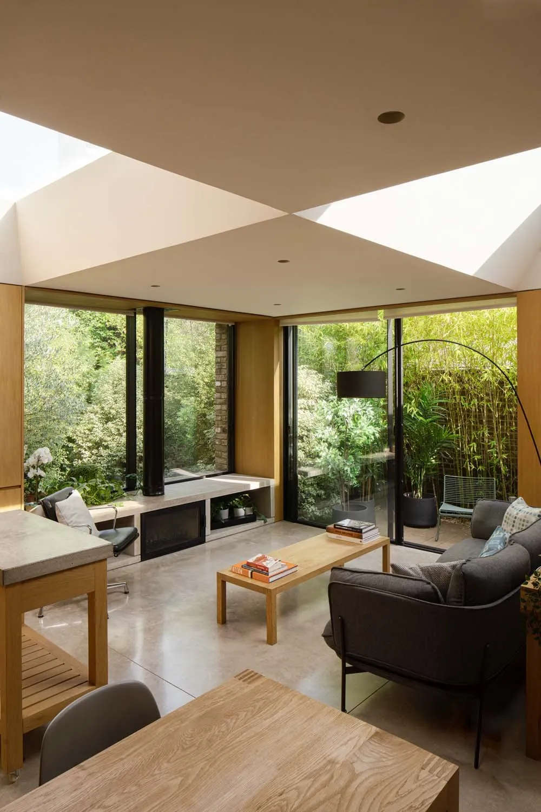
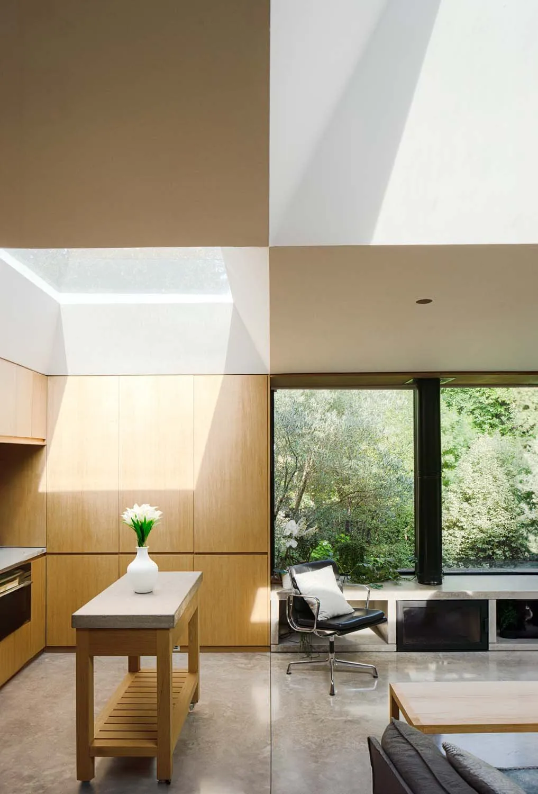
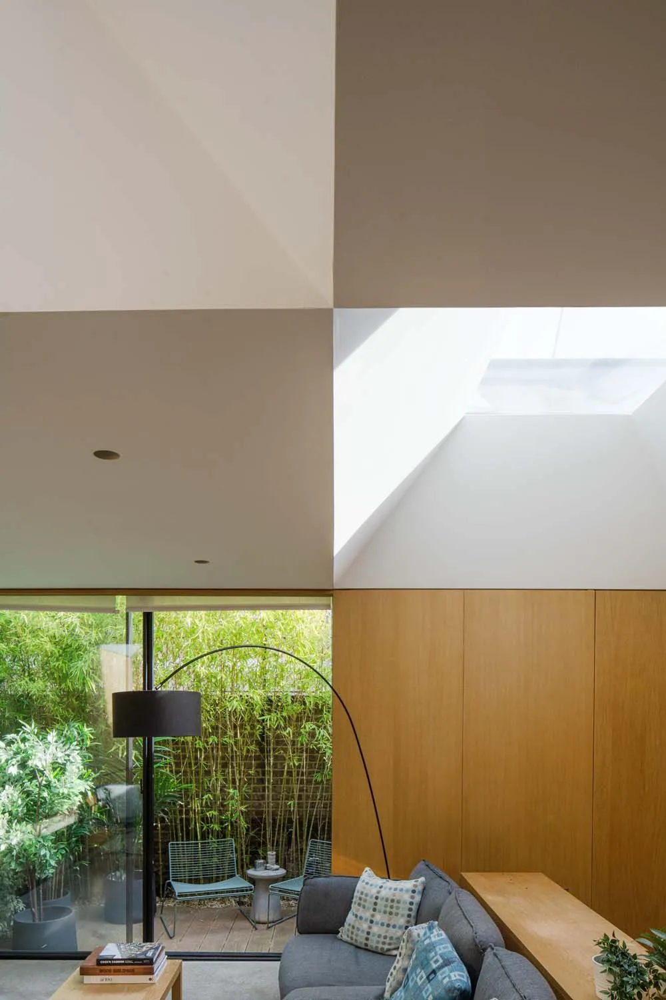
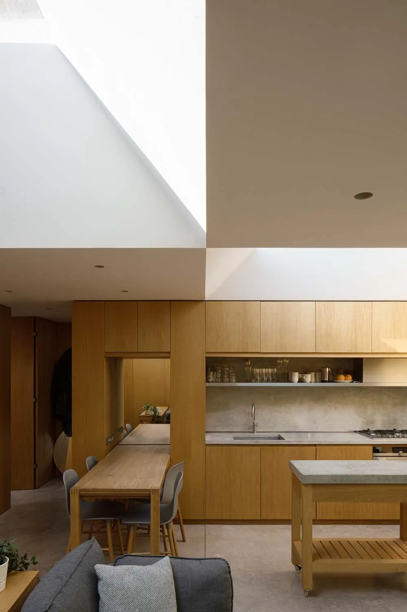
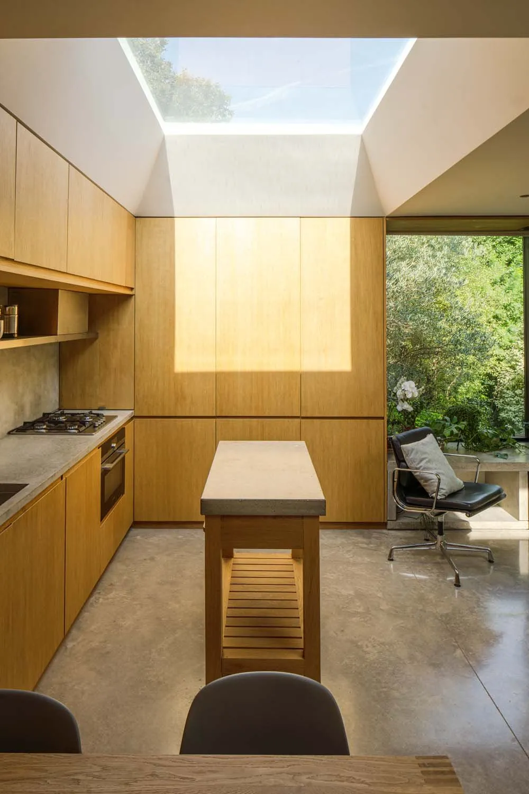
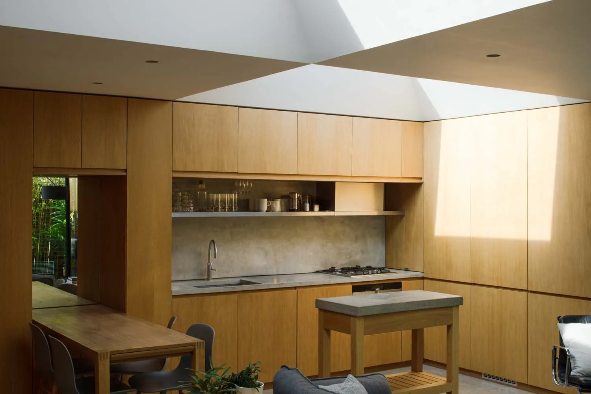
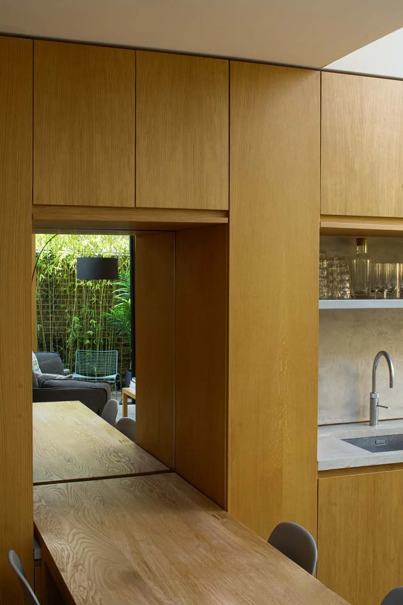
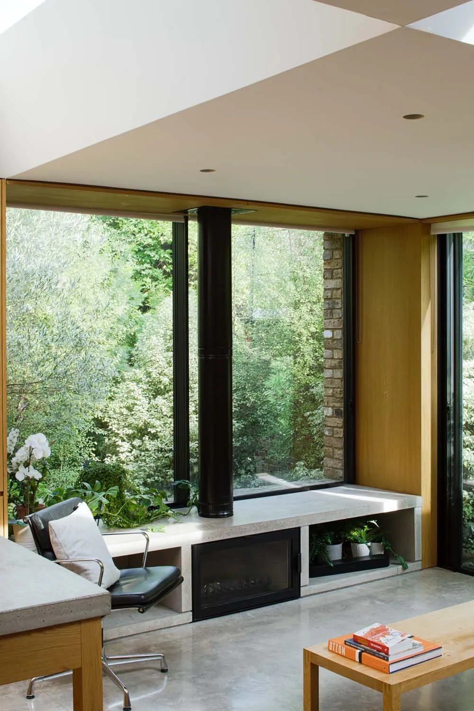
"I highly recommend working with Phil and his team if you want to build a home to be proud of."
Selim Bayer, client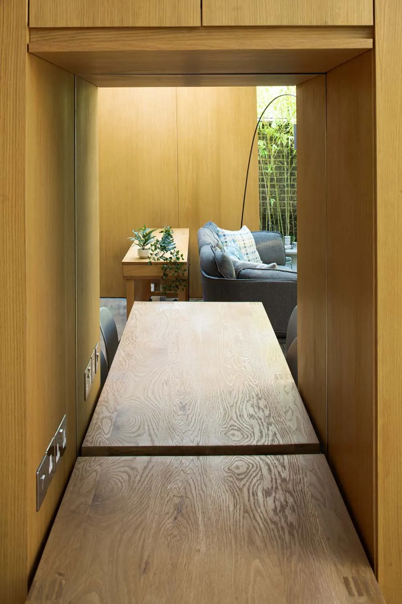
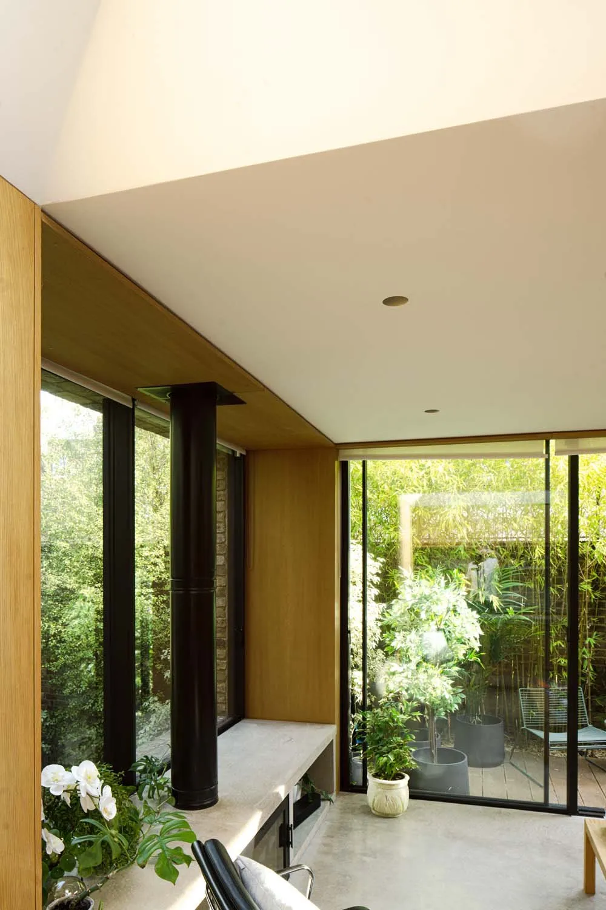

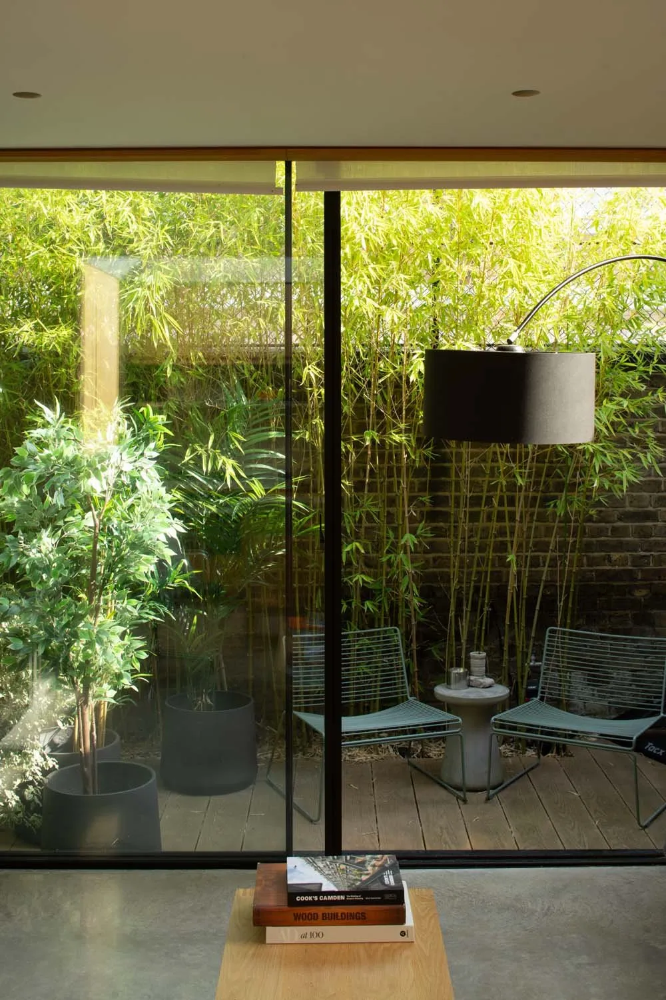
What it's made of.
Where it appeared.